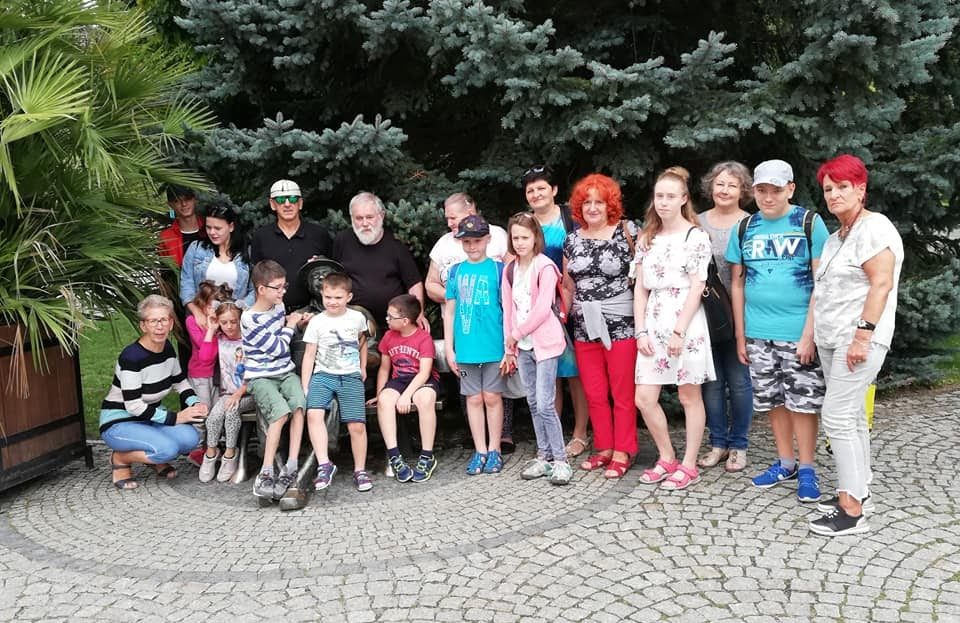
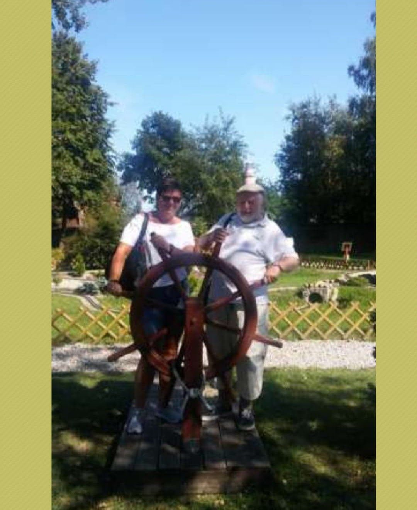

JA I MÓJ DOM
- Jeżeli jesteś, byłeś lub pragniesz zostać rodziną zastępczą lub adopcyjną...
- Jeżeli nie jest ci obojętny los dzieci osamotnionych, odrzuconych, osieroconych ...
- Jeżeli masz doświadczenie w pracy z rodzicami i dziećmi...
- Jeżeli chcesz i możesz pomóc innym ...
... dobrze trafiłeś.
Ta strona jest właśnie dla Ciebie!

Nasza Fundacja wyrosła z doświadczeń bycia rodzicem zastępczym w różnych formach prawnych zastępczego rodzicielstwa... dla 21 dzieci.
Nazwa "FUNDACJA RODZINNEJ OPIEKI ZASTĘPCZEJ..." określa, że organizacja ta ma wspierać osoby rodzinnie wychowujące dzieci osierocone, wspólnie z nimi zamieszkujące oraz biorące za nie moralną i prawną odpowiedzialność.
"... JA I MÓJ DOM" pozwala natomiast na indywidualne utożsamianie się z tą Fundacją zarówno każdemu z członków zastępczego domu rodzinnego, jak również każdemu z fundatorów, darczyńców i sponsorów.
Odwiedzaj nas często!

Celem Fundacji JA I MÓJ DOM jest
gromadzenie środków finansowych i zasobów materialnych dla
utrzymania i rozwoju rodzinnych form zastępczego rodzicielstwa świadczonych przez Krystynę i Zdzisława Brewińskich i inne rodziny zastępcze współpracujące z Fundacją dla dzieci odrzuconych i osieroconych
organizowania współpracy i wzajemnej pomocy między zastępczymi rodzicami, w szczególności przez wspieranie grup samopomocowych i promocję wolontariatu na rzecz rodzinnej pieczy zastępczej
organizacyjnej i prawnej pomocy w powstawaniu rodzin zastępczych oraz pomocy rodzinom działajacym w systemie pieczy zastępczej i ich podopiecznych w wyrównywaniu ich szans życiowych i przeciwdziałaniu w zakresie wykluczenia społecznego
tworzenia systemu wsparcia dla rodzin zastępczych i biologicznych oraz usamodzielnionych wychowanków, uwzględniając działania na rzecz osób niepełnosprawnych.
Odpłatna działalność statutowa pożytku publicznego:
A. Organizowanie współpracy i wzajemnej pomocy między zastępczymi rodzicami:
- szkolenia i warsztaty oraz poradnictwo psychologiczne, pedagogiczne i prawne dla rodzin zastępczych i biologicznych,
- organizację czasu wolnego, w tym wakacji i ferii dla dzieci i ich opiekunów,
B. Organizacyjna i prawna pomoc w powstawaniu rodzin zastępczych przez:
- konferencje i seminaria,
- upowszechnianie wiedzy i doświadczeń zastępczego rodzicielstwa,
- imprezy integracyjne dla środowisk rodzinnej pieczy zastępczej,
C. Tworzenie systemu wsparcia dla rodzin zastępczych i biologicznych oraz usamodzielnionych wychowanków:
- tworzenie i prowadzenie ośrodków zastępczego rodzicielstwa oraz wsparcia rodzinnego, w tym prowadzenie punktów spotkań rodzinnych dla dzieci wziętych do rodzinnej pieczy zastępczej z ich biologicznymi rodzinami
- tworzenie i prowadzenie ośrodków dla byłych wychowanków nie radzących sobie samodzielnie w życiu, w tym:
- ośrodków wsparcia dziennego,
- mieszkań chronionych,
- rodzinnych domów pomocy dla osób wymagających wsparcia z powodu niepełnosprawności
Nieodpłatna działalność statutowa pożytku publicznego
1, Organizacyjne i materialne wspieranie rodzinnych domów zastępczych, pogotowi rodzinnych i rodzin zastępczych w zakresie:
- utrzymania i wyposażenia domu
- opieki medycznej i psychologicznej
- wykształcenia i wypoczynku wakacyjnego
- usamodzielnienia i opieki następczej.
2. Organizowanie współpracy i wzajemnej pomocy między zastępczymi rodzicami przez:
- wspieranie samopomocowych grup rodzin zastępczych oraz zagrożonych wykluczeniem społecznym,
- szkolenia i warsztaty oraz poradnictwo psychologiczne, pedagogiczne i prawne dla rodzin zastępczych i biologicznych,
- działania z zakresu przystosowania zawodowego usamodzielnianych wychowanków, w tym niepełnosprawnych,
- organizację czasu wolnego, w tym wakacji i feriidla dzieci i ich opiekunów,
- kontakty z krajowymi i zagranicznymi środowiskami dla dzieci osieroconych i odrzuconych.
3. Organizacyjna i prawna pomoc w powstawaniu rodzin zastępczych przez:
- akcje poszukiwania kandydatów na rodziny zastępcze,
- konferencje i seminaria,
- upowszechnianie wiedzy i doświadczeń zastępczego rodzicielstwa,
- imprezy integracyjne dla środowisk rodzinnej pieczy zastępczej,
- obchody dnia zastępczego rodzicielstwa,
- promocje wolontariatu.
4. Tworzenie systemu wsparcia dla rodzin zastępczych i biologicznych oraz usamodzielnionych wychowanków przez:
- tworzenie i prowadzenie ośrodków zastępczego rodzicielstwa oraz wsparcia rodzinnego, w tym prowadzenie punktów spotkań rodzinnych dla dzieci wziętych do rodzinnej pieczy zastępczej z ich biologicznymi rodzicami,
- tworzenie i prowadzenie ośrodków dla byłych wychowanków nie radzących sobie samodzielnie w życiu, w tym:
- ośrodków wsparcia dziennego,
- mieszkań chronionych,
- rodzinnych domów pomocy dla osób wymagajacych wsparcia z powodu niepełnosprawności,
- wykonywanie zadań własnych i zleconych w zakresie pomocy społecznej.